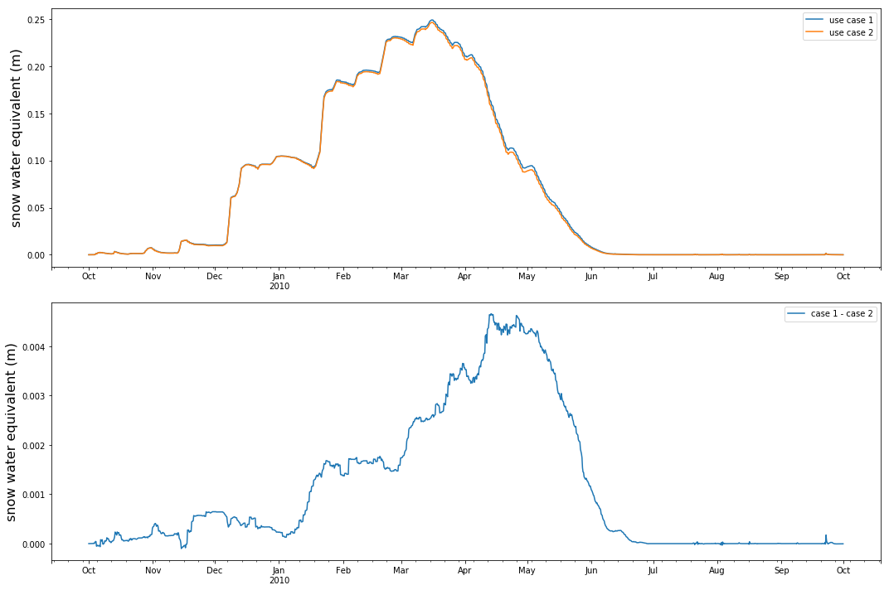
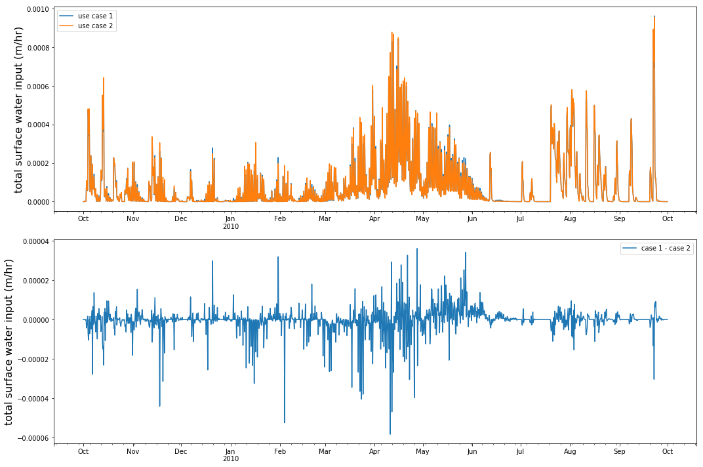

Data analysis for the snowmelt modeling use cases¶
2. Compare domain average SWE and SWIT (surface water total input)¶
[9]:
import netCDF4
import pandas as pd
import numpy
import matplotlib.pyplot as plt
import matplotlib.dates as mdates
# read aggout.nc file (domain average data)
case1_data = netCDF4. Dataset(os.path.join(data_dir_list[0],'aggout.nc'),'r')
case2_data = netCDF4. Dataset(os.path.join(data_dir_list[1],'aggout.nc'),'r')
# retrieve time data
time = case1_data.variables['time']
time_data = time[:]
time_units = getattr(time, 'units', None)
time_calendar = getattr(time, 'calendar', None)
time_var = [netCDF4.num2date(value, units=time_units, calendar=time_calendar) for value in time_data]
# compare model output of snow water equivalent and total surface water input
for variable, name, units in zip(['SWE','SWIT'],['snow water equivalent','total surface water input'],['(m)','(m/hr)']):
# retrieve domain average varabile data
case1_var = numpy.squeeze(case1_data.variables[variable][:])
case2_var = numpy.squeeze(case2_data.variables[variable][:])
var_diff = case1_var - case2_var
# make plot for comparison
plot_data = {'time':time_var, 'use case 1': case1_var, 'use case 2': case2_var, 'case 1 - case 2': var_diff}
plot_df = pd.DataFrame(plot_data)
plot_df.set_index('time',inplace=True)
fig, ax = plt.subplots(2,1,figsize=(15,10))
plot_df.plot(y=['use case 1','use case 2'], ax=ax[0])
plot_df.plot(y=['case 1 - case 2'], ax=ax[1])
for axis in ax:
axis.set_ylabel('{} {}'.format(name, units),fontsize=16)
axis.set_xlabel('')
plt.tight_layout()
case1_data = None
case2_data = None


[ ]: